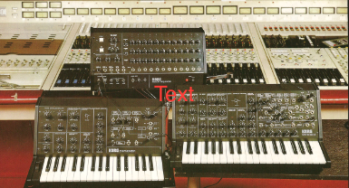
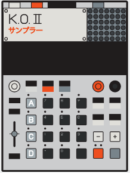
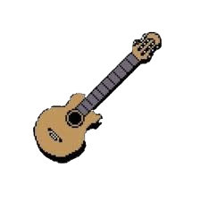
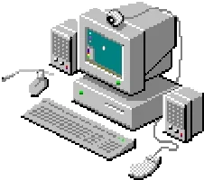
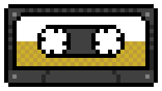

Synthesizers- Serge-style Modular System
- Wiard Music Weasel
- Casio CZ-101
- Ensoniq Esq-1
- Roland JX-3P w/ PG-200
- Korg DW-6000
- Basto MicroGranny Granular
- Elektron Model:Cycles
- Volca FM 2
- norns Monome
- Ciat Lombarde Peterlin
- Ciat Lokbarde Clicker

Drum Machines / Samplers- Tr-808 Clone
- Tr-606
- Arturia MicroBrute
- Teenage Engineering EP-133 Teenage Engineering EP-40Riddim
 Effects Processors
Effects Processors
- Orban 672a EQ
- Orban Spring Reverb
- Delta Lab AD1024
- Hofhner Echotron Tape Echo
- Meng Qi Wingie 2
- Parametric Tube EQ
- Fostex 3040 Comp
- Really Nice Limiting Amp
- 3rd Dimension BBD Chorus
- Afterneath Earthquaker Devices Reverb Pedal
- Instant Lofi Junky VibeComp Effect Pedal
- Way Huge Aquapuss Analog Delay
- The Accountant JFET Compressor Pedal
- Danelectro Reel Tape Echo
- Danelectro Spring Reverb Pedal
- Pioneer Spring Reverb Amp 202
- Yamaha R1000 Digital Reverb
- Verbos Multitap Delay Processor

Non‑Electronic Music Instruments- Dano 64' Dan Electro 6‑String Electric Guitar w/ 2 Single Coil Lipstick Pickups, Custom Pickguard and Tone/Volume Knobs
- DanElectro 12‑string Electric Guitar w/ Lipstick Single Coil Pickups
- Hagstrom Futurama Black Short Scale Electric Bass 1962
- AutoHarp by Oscar Schmidt
- Yamaha Acoustic Guitar (1990s)
- Rain Stick
- Kalimba
- Melodica
- Hand Painted Half Size Recorder
 Non‑Electronic Music Percussion Instruments
Non‑Electronic Music Percussion Instruments
- Hand Painted Halfsize Tambourine
- Bored Coconut and Dried Bean Shaker
- DW6000 Kick Drum Pedal
- Tama Imperialstar Snare Drum w/ Remo Heads
Mixing and Routing
- Tascam M208 8 Channel / 4 Bus Stereo Mixer
- Tascam P32 Patchbay
- MT8X Matrix Mixer
- Micheal Rucci 8 Channel Passive Mini Mixer
- 3 HOSA RCA to 1/4" 8‑Headed Snakes

Software (That's Stuck in the Computer)- PurrData
- Max 8
- Supercollider
- Audacity
- Serum 2
- Maiden (enables software, code based synthesis away from computer via Monome Norns)
- Teenage Engineering EP SAMPLE TOOL

Tape MachinesTascam 32
The Tascam 32 is a half‑track, quarter‑inch master recorder — a pro‑sumer workhorse that anchors the tape workflow in OEStudio.
- Tascam 32
- Tascam MFP01
- Tascam 242
- Tascam 244
- Tascam 246
- Tascam 424
- Tascam 488ii
- Yamaha MT4X
- Teac 2440
- Teac 3340
- Revox A77
- Fostex R8